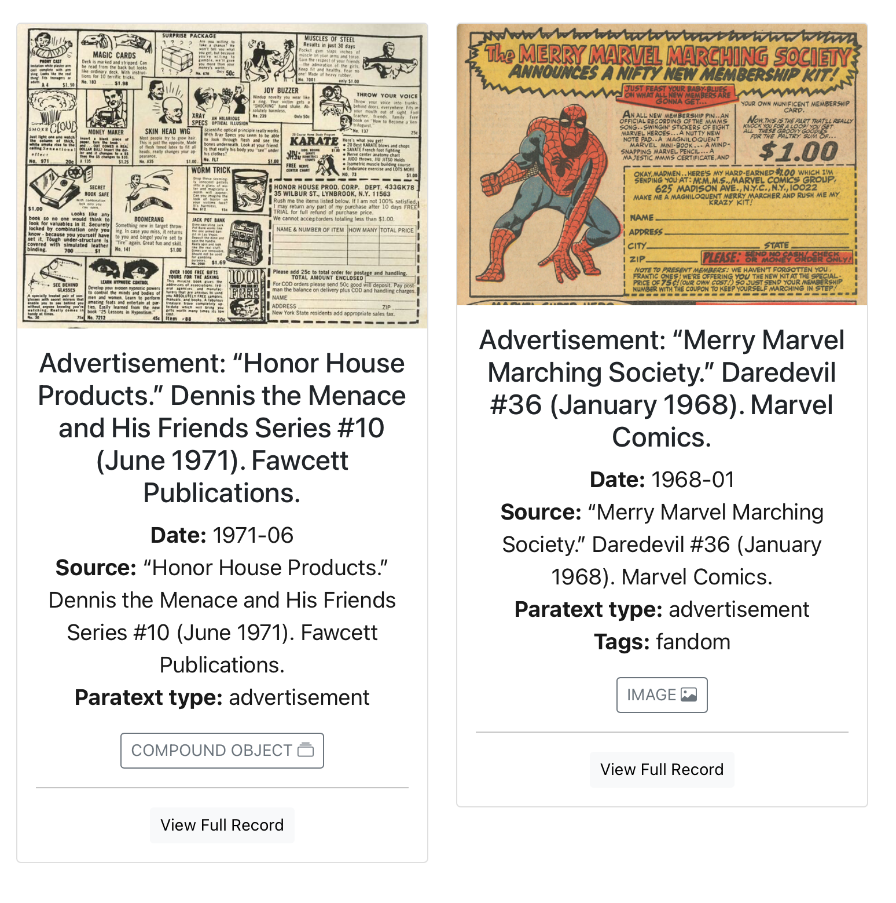

[cb]: https://collectionbuilder.github.io/ "CollectionBuilder" ## CollectionBuilder #### More configuration, more features --- ## `config-search.csv` <https://collectionbuilder.github.io/cb-docs/docs/customization/config-search/#search-configuration-config-searchcsv> `config-searcc.csv` tells CollectionBuilder which of your metadata fields are indexed, i.e., which metadata fields your users will be able to search. --- ## `config-search.csv` The columns in the csv file are: - field: - Determines the metadata field to be indexed for search - Example: `title`, `date`, `description`, etc. - index: - Determines whether the field is searchable. - _Options:_ `true`, `false` - display: - Determines whether the value of that metadata field is displayed in the search results. - _Options:_ `true`, `false` --- ## `config-search.csv` example ```csv field,index,display title,true,true date,true,true creator,true,false description,true,true subject,true,true location,true,false ``` --- ## `config-browse.csv` <https://collectionbuilder.github.io/cb-docs/docs/customization/config-browse/#browse-page-configuration-config-browsecsv> `config-browse.csv` controls which metadata appears on a card for each item in the browse screens. Title appears on the card automatically. After that, you can add whatever metadata you’d like to the CSV, as well as determine how that metadata will be displayed. --- ## browse cards  <!--  --> --- ### `config-browse.csv` columns: - field: - Selects the field from your metadata CSV. - display_name: - Determines the field name as it is displayed to users. - btn: - Determines whether the field displays as a button. - _Options:_ `true` or leave blank - `true` will turn all metadata in that field into buttons, and is recommend for fields that have multiple entries, like ‘subject.’ --- ### `config-browse.csv` columns (continued): - hidden: - Determines whether this field is hidden. - _Options:_ `true` or leave blank - Useful when you don’t want a metadata field to be visibly present on Browse page cards, but still want to filter for that field. --- ### `config-browse.csv` columns (continued): - sort_name: - Determines if the field will be used as an option to sort cards on the browse page via the dropdown menu to the right of the search box. This option also determines the label used in that dropdown menu for the field. - _Options:_ write whatever word/phrase you’d like to show up in the dropdown field. Once an option is entered, the sort function will work for that field. Typically, you just put the display_name here, but oftentimes it’s helpful to give more context, such as in the example below for Date, where the sort function indicates that it will sort by "Date Created" --- ## `config-browse.csv` example ``` field,display_name,btn,hidden,sort_name date,Date,,,Date Created description,,,, creator,Creator,,, subject,,true location,,true identifier,,,true,Identifier ``` --- ## `config-browse.csv` example ``` field,display_name,btn,hidden,sort_name date,Date,,,Date source,Source,,, paratext type,Paratext type,,,Paratext type tag,Tags,,, ``` --- ## Compound Objects and Multiple Items <https://collectionbuilder.github.io/cb-docs/docs/metadata/compound-objects/#compound_object> _Who is using (or wants to use) compound objects_? A "compound_object" item can include a set of objects with any media type that CollectionBuilder handles, i.e. image, pdf, video, audio, panorama (CB-CSV only), or record. For compound ojbects, each object "child" object displays its own metadata. --- ## **compound_object** use case examples: - *Scrapbook:* to represent a digitized scrapbook, a compound object might contain a series of 25 pages or photographs from a scrapbook. The parent compound object metadata record provides full details about the scrapbook, while the child object metadata records will only describe the unique information about each individual page or photo. - *Oral history:* an oral history compound object might contain various derivatives of an interview, such as audio, video, transcript, and portrait. - *Gallery:* a gallery compound object might contain a series of images from one event that are individually described with independent metadata. --- ## Multiple Items A "multiple" item is a set of images to be displayed together in a single Item page. For multiple items, the child items do not have individual child object pages/modals. Instead, clicking the child images will open a spotlight gallery of the images. Individual metadata for each child object is *not* displayed. --- ## **multiple** use case examples: - **Postcard:** images of a postcard’s front and back that are not individually described in the metadata beyond having a “title” value. - **3D archeological artifact:** images representing standardized perspectives of an archeological artifact that are not individually described in the metadata beyond having a “title” value (for example, “top”, “bottom”, “side” of a bowl). - **Gallery:** images from a single event that are not individually described in the metadata beyond having a “title” value. If you need detailed metadata for each child, use compound objects; if not, use multiple items. --- ## Feature Includes See <https://collectionbuilder.github.io/collectionbuilder-gh/feature_options.html> --- ## Timeline JS `{% include feature/timelinejs.html %}` See <https://raw.githubusercontent.com/jawalsh/comic-book-paratexts/refs/heads/main/pages/timeline-interactive.md>